특수용접기능사 (2015-01-25 기출문제)
1과목: 용접일반
1. 용접봉에서 모재로 용융금속이 옮겨가는 용적이행 상태가 아닌 것은?(오류 신고가 접수된 문제입니다. 반드시 정답과 해설을 확인하시기 바랍니다.)
- 글로뷸러형
- 스프레이형
- 단락형
- 핀치효과형
(정답률: 80%)

2. 일반적으로 사람의 몸에 얼마 이상의 전류가 흐르면 순간적으로 사망할 위험이 있는가?
- 5 [mA]
- 15 [mA]
- 25 [mA]
- 50 [mA]
(정답률: 86%)
3. 피복 아크 용접시 일반적으로 언더컷을 발생시키는 원인으로 가장 거리가 먼 것은?
- 용접 전류가 너무 높을 때
- 아크 길이가 너무 길 때
- 부적당한 용접봉을 사용했을 때
- 홈 각도 및 루트 간격이 좁을 때
(정답률: 67%)
4. <보기>에서 용극식 용접 방법을 모두 고른 것은?(일부 컴퓨터에서 보기의 특수 문자가 보이지 않아서 괄호뒤에 다시 표기하여 둡니다.)
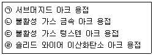
- (ㄱ), (ㄴ)(ㄱ, ㄴ)
- (ㄷ), (ㄹ)(ㄷ, ㄹ)
- (ㄱ), (ㄴ), (ㄷ)(ㄱ, ㄴ, ㄷ)
- (ㄱ), (ㄴ), (ㄹ)(ㄱ, ㄴ, ㄹ)
(정답률: 69%)
5. 납땜을 연납땜과 경납땜으로 구분할 때 구분 온도는?
- 350 ℃
- 450 ℃
- 550 ℃
- 650 ℃
(정답률: 84%)
6. 전기저항 용접의 특징에 대한 설명으로 틀린 것은?
- 산화 및 변질 부분이 적다
- 다른 금속 간의 접합이 쉽다.
- 용제나 용접봉이 필요없다.
- 접합 강도가 비교적 크다.
(정답률: 53%)
7. 직류 정극성(DCSP)에 대한 설명으로 옳은 것은?
- 모재의 용입이 얕다.
- 비드 폭이 넓다.
- 용접봉의 녹음이 느리다.
- 용접봉에 (+)극을 연결한다.
(정답률: 74%)
8. 다음 용접법 중 압접에 해당되는 것은?
- MIG 용접
- 서브머지드 아크 용접
- 점용접
- TIG 용접
(정답률: 83%)
9. 로크웰 경도시험에서 C스케일의 다이아몬드의 압입자 꼭지각 각도는?
- 100°
- 115°
- 120°
- 150°
(정답률: 77%)
10. 아크 타임을 설명한 것 중 옳은 것은?
- 단위 기간 내의 작업여유 시간이다.
- 단위 시간 내의 용도여유 시간이다.
- 단위 시간 내의 아크 발생 시간을 백분율로 나타낸 것이다.
- 단위 시간 내의 시공한 용접길이를 백분율로 나타낸 것이다.
(정답률: 86%)
11. 용접부에 오버랩의 결함이 발생했을 때 가장 올바른 보수 방법은?
- 작은 지름의 용접봉을 사용하여 용접한다.
- 결함 부분을 깎아내고 재용접한다.
- 드릴로 정지 구멍을 뚫고 재용접한다.
- 결함 부분을 절단한 후 덧붙임 용접을 한다.
(정답률: 82%)
12. 용접 설계상 주의점으로 틀린 것은?
- 용접하기 쉽도록 설계할 것
- 결함이 생기기 쉬운 용접 방법은 피할 것
- 용접 이음이 한 곳으로 집중되도록 할 것
- 강도가 약한 필릿 용접은 가급적 피할 것
(정답률: 86%)
13. 저온 균열이 일어나기 쉬운 재료에 용접 전에 균열을 방지할 목적으로 피용접물의 전체 또는 이음부 부근의 온도를 올리는 것을 무엇이라고 하는가?
- 잠열
- 예열
- 후열
- 발열
(정답률: 93%)
14. TIG 용접에 사용되는 전극의 재질은?
- 탄소
- 망간
- 몰리브덴
- 텅스텐
(정답률: 91%)
15. 용접의 장점으로 틀린 것은?
- 작업 공정이 단축되어 경제적이다.
- 기밀, 수밀, 유밀성이 우수하며, 이음 효율이 높다.
- 용접사의 기량에 따라 용접부의 품질이 좌우된다.
- 재료의 두께에 제한이 없다.
(정답률: 73%)
16. 이산화탄소 아크 용접의 솔리드 와이어 용접봉의 종류 표시는 YGA-50W-1.2-20 형식이다. 이때 Y가 뜻하는 것은?
- 가스 실드 아크 용접
- 와이어 화학 성분
- 용접 와이어
- 내후성강용
(정답률: 79%)
17. 용접선 양측을 일정 속도로 이동하는 가스 불꽃에 의하여 나비 약 150mm를 150~200℃로 가열한 다음 곧 수냉하는 방법으로 주로 용접선 방향의 응력을 완화시키는 잔류 응력 제거법은?
- 저온 응력 완화법
- 기계적 응력 완화법
- 노 내 풀림법
- 국부 풀림법
(정답률: 72%)
18. 용접 자동화 방법에서 정성적 자동제어의 종류가 아닌 것은?
- 피드백 제어
- 유접점 시퀸스 제어
- 무접점 시퀸스 제어
- PLC 제어
(정답률: 57%)
19. 지름 13mm, 표점거리 150mm인 연강재 시험편을 인장시험한 후의 거리가 154mm가 되었다면 연신율은?
- 3.89 %
- 4.56 %
- 2.67 %
- 8.45 %
(정답률: 59%)
20. 용접균열에서 저온균열은 일반적으로 몇 ℃ 이하에서 발생하는 균열을 말하는가?
- 200~300℃ 이하
- 301~400℃ 이하
- 401~500℃ 이하
- 501~600℃ 이하
(정답률: 81%)
21. 스테인리스강을 TIG 용접할 때 적합한 극성은?
- DCSP
- DCRP
- AC
- ACRP
(정답률: 63%)
22. 피복 아크 용접 작업시 전격에 대한 주의사항으로 틀린 것은?
- 무부하 전압이 필요 이상으로 높은 용접기는 사용하지 않는다.
- 전격을 받은 사람을 발견했을 때는 즉시 스위치를 꺼야 한다.
- 작업 종료시 또는 장시간 작업을 중지할 때는 반드시 용접기의 스위치를 끄도록 한다.
- 낮은 전압에서는 주의하지 않아도 되며, 습기찬 구두는 착용해도 된다.
(정답률: 93%)
23. 직류 아크 용접의 설명 중 옳은 것은?
- 용접봉을 양극, 모재를 음극에 연결하는 경우를 정극성이라고 한다.
- 역극성은 용입이 깊다.
- 역극성은 두꺼운 판의 용접에 적합하다.
- 정극성은 용접 비드의 폭이 좁다.
(정답률: 67%)
24. 다음 중 수중 절단에 가장 적합한 가스로 짝지어진 것은?
- 산소 –수소 가스
- 산소 –이산화탄소 가스
- 산소 –암모니아 가스
- 산소 –헬륨 가스
(정답률: 92%)
25. 피복 아크 용접봉 중에서 피복제 중에 석회석이나 형석을 주성분으로 하고 피복제에서 발생하는 수소량이 적어 인성이 좋은 용착금속을 얻을 수 있는 용접봉은?
- 일미나이트계(E 4301)
- 고셀률로스계(E 4311)
- 고산화티탄계(E 4313)
- 저수소계(E 4316)
(정답률: 82%)
26. 피복 아크 용접봉의 간접 작업성에 해당되는 것은?
- 부착 슬래그의 박리성
- 용접봉 용융 상태
- 아크 상태
- 스패터
(정답률: 57%)
27. 가스 용접의 특징에 대한 설명으로 틀린 것은?
- 가열시 열량 조절이 비교적 자유롭다.
- 피복 아크 용접에 비해 후판 용접에 적당하다.
- 전원 설비가 없는 곳에서도 쉽게 설치할 수 있다.
- 피복 아크 용접에 비해 유해 광선의 발생이 적다.
(정답률: 65%)
28. 피복 아크 용접봉의 심선의 재질로서 적당한 것은?
- 고탄소 림드강
- 고속도강
- 저탄소 림드강
- 반 연강
(정답률: 64%)
29. 가스 절단에서 양호한 절단면을 얻기 위한 조건으로 틀린 것은?
- 드래그(drag)가 가능한 클 것
- 드래그(drag)의 홈이 낮고 노치가 없을 것
- 슬래그 이탈이 양호할 것
- 절단면 표면의 각이 예리할 것
(정답률: 81%)
30. 용접기의 2차 무부하 전압을 20~30V로 유지하고, 용접 중 전격 재해를 방지하기 위해 설치하는 용접기의 부속 장치는?
- 과부하방지 장치
- 전격 방지 장치
- 원격 제어 장치
- 고주파 발생 장치
(정답률: 84%)
31. 피복 아크 용접기로서 구비해야 할 조건 중 잘못된 것은?
- 구조 및 취급이 간편해야 한다.
- 전류 조정이 용이하고 일정하게 전류가 흘러야 한다.
- 아크 발생과 유지가 용이하고 아크가 안정되어야 한다.
- 용접기가 빨리 가열되어 아크 안정을 유지해야 한다.
(정답률: 89%)
32. 피복 아크 용접에서 용접봉의 용융속도와 관련이 가장 큰 것은?
- 아크 전압
- 용접봉 지름
- 용접기의 종류
- 용접봉 쪽 전압강하
(정답률: 60%)
33. 가스 가우징이나 치핑에 비교한 아크 에어 가우징의 장점이 아닌 것은?
- 작업 능률이 2~3배 높다.
- 장비 조작이 용이하다.
- 소음이 심하다.
- 활용 범위가 넓다.
(정답률: 85%)
34. 피복 아크 용접에서 아크 전압이 30V, 아크 전류가 150A, 용접 속도가 20cm/min일 때 용접입열은 몇 joule/cm인가?
- 27000
- 22500
- 15000
- 13500
(정답률: 49%)
35. 다음 가연성 가스 중 산소와 혼합하여 연소할 때 불꽃 온도가 가장 높은 가스는?
- 수소
- 메탄
- 프로판
- 아세틸렌
(정답률: 83%)
2과목: 용접재료
36. 피복 아크 용접봉의 피복제의 작용에 대한 설명으로 틀린 것은?
- 산화 및 질화를 방지한다.
- 스패터가 많이 발생한다.
- 탈산 정련 작용을 한다.
- 합금 원소를 첨가한다.
(정답률: 83%)
37. 부하 전류가 변화하여도 단자 전압은 거의 변하지 않는 특성은?
- 수하 특성
- 정전류 특성
- 정전압 특성
- 전기 저항 특성
(정답률: 72%)
38. 용접기의 명판에 사용율이 40%로 표시되어 있을 때 다음 설명으로 옳은 것은?
- 아크 발생 시간이 40% 이다.
- 휴지 시간이 40% 이다.
- 아크 발생 시간이 60% 이다.
- 휴지 시간이 4분이다.
(정답률: 85%)
39. 포금의 주성분에 대한 설명으로 옳은 것은?
- 구리에 8~12% Zn을 함유한 합금이다.
- 구리에 8~12% Sn을 함유한 합금이다.
- 6:4 황동에 1% Pb을 함유한 합금이다.
- 7:3 황동에 1% Mg을 함유한 합금이다.
(정답률: 47%)
40. 다음 중 완전 탈산시켜 제조한 강은?
- 킬드강
- 림드강
- 고망간강
- 세미 킬드강
(정답률: 72%)
41. Al-Cu-Si 합금으로 실리콘(Si)을 넣어 주조성을 개선하고 Cu를 첨가하여 절삭성을 좋게 한 알루미늄 합금으로 시효 경화성이 있는 합금은?
- Y합금
- 라우탈
- 코비탈륨
- 로-엑스 합금
(정답률: 63%)
42. 주철 중 구상 흑연과 편상 흑연의 중간 형태의 흑연으로 형성된 조직을 갖는 주철은?
- CV 주철
- 에시큘라 주철
- 니크로 실라 주철
- 미하나이트 주철
(정답률: 53%)
43. 연질 자성 재료에 해당하는 것은?
- 페라이트 자석
- 알니크 자석
- 네오디뮴 자석
- 퍼멀로이
(정답률: 51%)
44. 다음 중 황동과 청동의 주성분으로 옳은 것은?
- 황동 : Cu + Pb, 청동 : Cu + Sb
- 황동 : Cu + Sn, 청동 : Cu + Zn
- 황동 : Cu + Sb, 청동 : Cu + Pb
- 황동 : Cu + Zn, 청동 : Cu + Sn
(정답률: 65%)
45. 다음 중 담금질에 의해 나타난 조직 중에서 경도와 강도가 가장 높은 것은?
- 오스테나이트
- 소르바이트
- 마텐자이트
- 크루스타이트
(정답률: 66%)
46. 다음 중 재결정 온도가 가장 낮은 금속은?
- Al
- Cu
- Ni
- Zn
(정답률: 44%)
47. 다음 중 상온에서 구리(Cu)의 결정 격자 형태는?
- HCT
- BCC
- FCC
- CPH
(정답률: 61%)
48. Ni-Fe 합금으로서 불변강이라 불리우는 합금이 아닌 것은?
- 인바
- 모넬메탈
- 엘린바
- 슈퍼인바
(정답률: 64%)
49. 다음 중 Fe-C 평형 상태도에 대한 설명으로 옳은 것은?
- 공정점의 온도는 약 723℃ 이다.
- 포정점은 약 4.30%C를 함유한 점이다.
- 공석점은 약 0.8%C를 함유한 점이다.
- 순철의 자기 변태 온도는 210℃ 이다.
(정답률: 49%)
50. 고주파 담금질의 특징을 설명한 것 중 옳은 것은?
- 직접 가열하므로 열효율이 높다.
- 열처리 불량은 적으나 변형 보정이 항상 필요하다.
- 열처리 후의 연삭 과정을 생략 또는 단축시킬 수 없다.
- 간접 부분 담금질으로 원하는 깊이만큼 경화하기 힘들다.
(정답률: 54%)
3과목: 기계제도
51. 다음 입체도의 화살표 방향 투상도로 가장 적합한 것은?
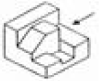
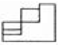
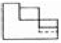
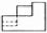
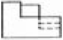
(정답률: 82%)
52. 다음 그림과 같은 용접방법 표시로 맞는 것은?
- 삼각 용접
- 현장 용접
- 공장 용접
- 수직 용접
(정답률: 85%)
53. 다음 밸브 기호는 어떤 밸브를 나타낸 것인가?
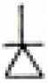
- 풋 밸브
- 볼 밸브
- 체크 밸브
- 버터플라이 밸브
(정답률: 77%)
54. 다음 중 리벳용 원형강의 KS 기호는?
- SV
- SC
- SB
- PW
(정답률: 53%)
55. 대상물의 일부를 떼어낸 경계를 표시하는데 사용하는 선의 굵기는?
- 굵은 실선
- 가는 실선
- 아주 굵은 실선
- 아주 가는 실선
(정답률: 64%)
56. 그림과 같은 배관도시 기호가 있는 관에는 어떤 종류의 유체가 흐르는가?
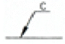
- 온수
- 냉수
- 냉온수
- 증기
(정답률: 73%)
57. 제3각법에 대하여 설명한 것으로 틀린 것은?
- 저면도는 정면도 밑에 도시한다.
- 평면도는 정면도의 상부에 도시한다.
- 좌측면도는 정면도의 좌측에 도시한다.
- 우측면도는 평면도의 우측에 도시한다.
(정답률: 64%)
58. 다음 치수 표현 중에서 참고 치수를 의미하는 것은?
- Sø24
- t=24
- (24)
- 24
(정답률: 86%)
59. 구멍에 끼워 맞추기 위한 구멍, 볼트, 리벳의 기호 표시에서 현장에서 드릴가공 및 끼워맞춤을 하고 양쪽면에 카운터 싱크가 있는 기호는?
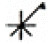
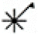
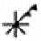
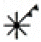
(정답률: 61%)
60. 도면을 용도에 따른 분류와 내용에 따른 분류로 구분할 때 다음 중 내용에 따라 분류한 도면인 것은?
- 제작도
- 주문도
- 견적도
- 부품도
(정답률: 60%)
핀치효과형은 용접봉과 모재 사이에 발생하는 전기적인 저항 차이로 인해 용융금속이 모재 쪽으로 밀려나는 현상을 이용하여 용접을 수행하는 방식입니다. 이에 비해 글로뷸러형은 용접봉에서 용융금속이 떨어져 나와 모재 위에 떨어지는 형태, 스프레이형은 고속으로 분사되는 용융금속이 모재 위에 떨어지는 형태입니다.